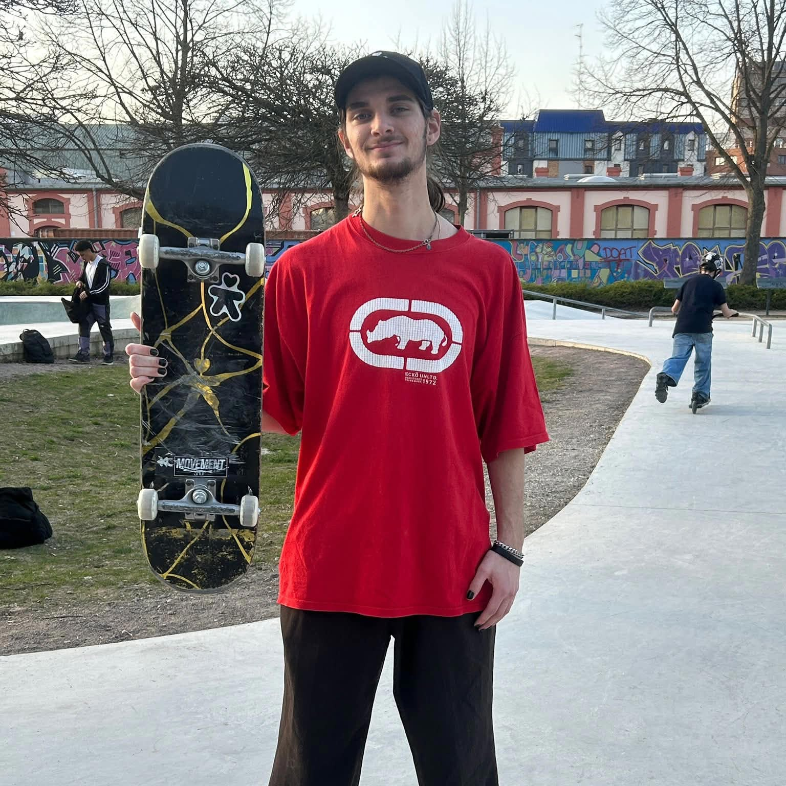
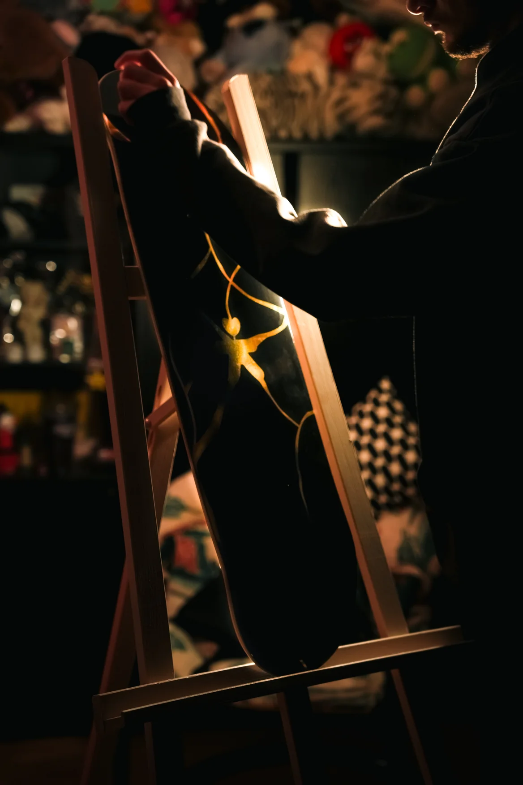
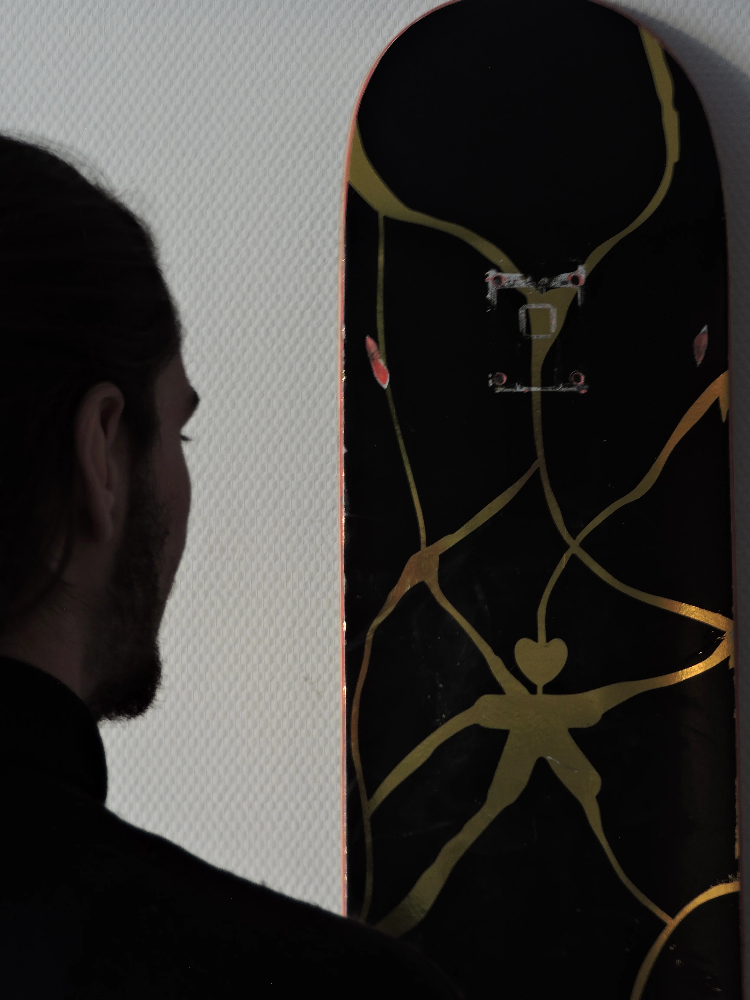
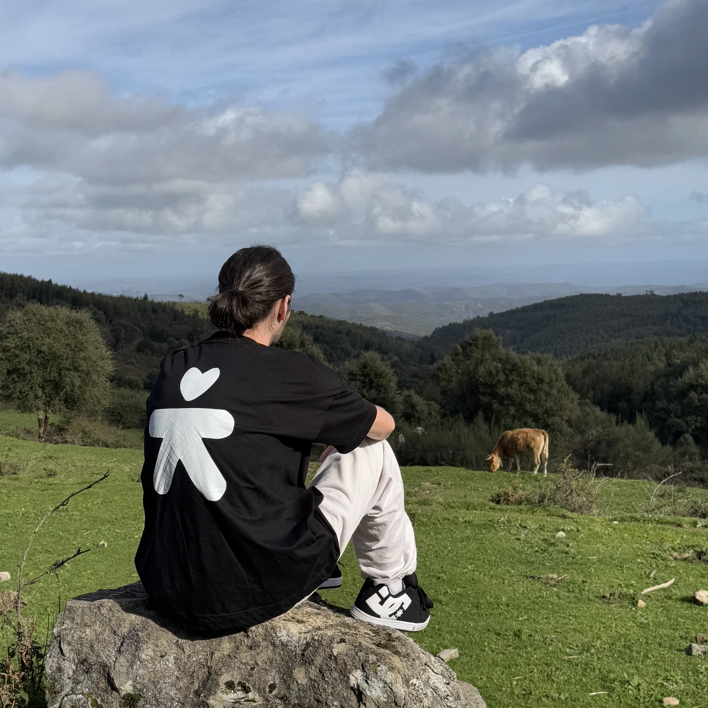

Notre Histoire
心
Cœur, âme et intention.
Mais ce mot représente aussi l'esprit, l'âme et l'intention. C'est exactement ce que nous mettons dans chaque planche de skateboard Kokoro.

La Vision
Au départ, il y avait une idée simple : créer des planches qui racontent une histoire. Des planches comme des toiles. Des objets qui portent quelque chose de plus que du bois et des roues.
Chaque ligne, chaque courbe et chaque design est pensé comme une forme d'expression artistique. KOKORO est née de cette vision : créer une marque de skateboard indépendante, où le skate, l'art et la nature se rencontrent.

"Au départ, il y avait une idée simple : créer des planches qui racontent une histoire. Des planches comme des toiles. Des objets qui portent quelque chose de plus que du bois et des roues." — Fondateur, Kokoro Project

L'Origine
Kokoro Project est une marque indépendante née d'une passion pour le skate et l'art. Nous avons voulu créer quelque chose d'authentique, loin des grandes enseignes, proche de ses valeurs.
Chaque planche est une déclaration artistique, pensée pour rider et pour exposer. Parce que le skate est aussi une forme d'art.


Naissance du concept Kokoro — créer des planches qui racontent une histoire, avec des designs pensés comme des œuvres d'art.
Lancement de la collection Kintsugi — inspirée de l'art japonais de réparer avec de l'or. La campagne de financement participatif est un succès.
Collaboration avec Alsace Nature et La Grange Workshop. Développement de la collection Kitei. Le projet grandit, la communauté aussi.
De nouvelles collections arrivent. L'aventure continue — toujours indie, toujours artisanal, toujours engagé.
La suite
Une communauté engagée, des planches éthiques, et un projet qui grandit chaque jour.